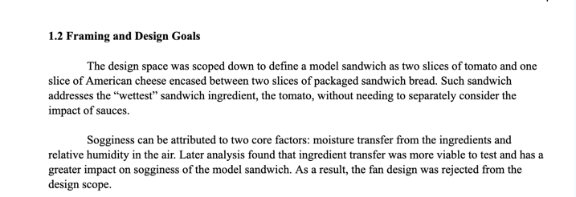
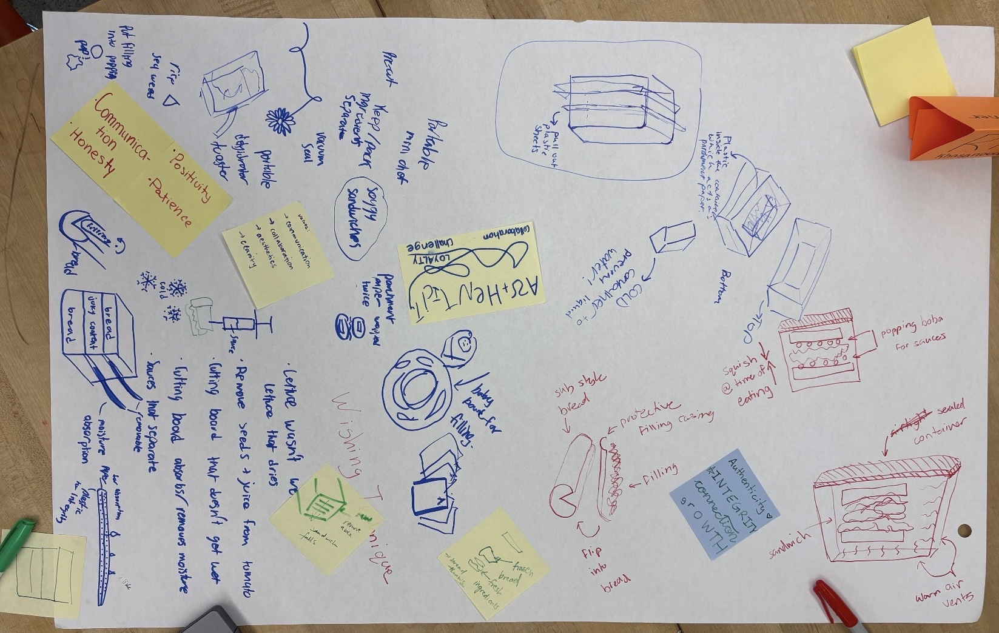
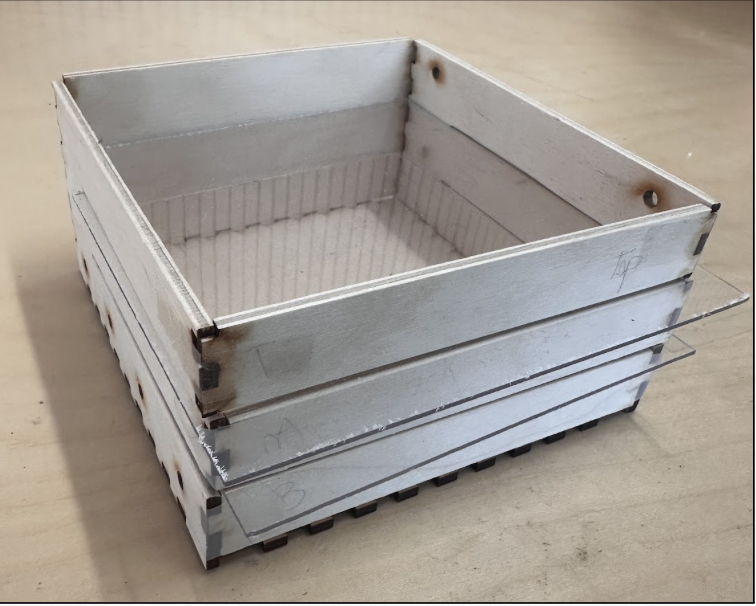
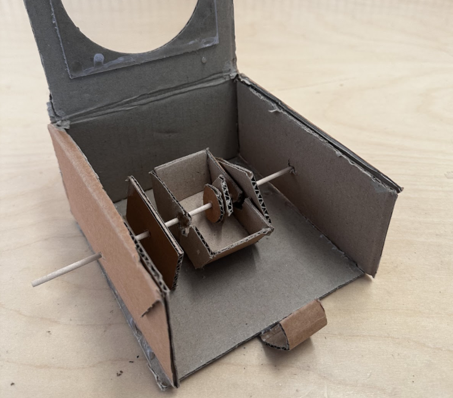
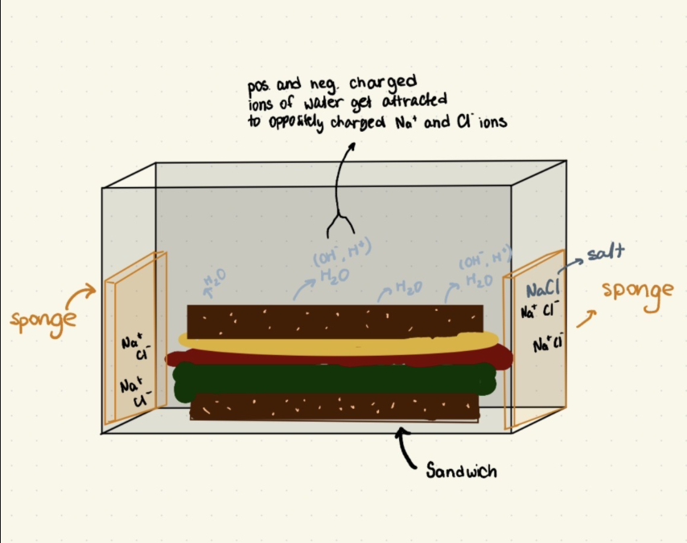

Frame
Reframing
Reframing is the process of redefining or narrowing a problem
to better reflect its core issue, often based on new
insights, constraints, or feedback. Reframing allows constraints and criteria
to be better defined and can lead to more focused and effective design solutions [1].

Fig. 1: An extract from the final report showing the change
of the scope and reframing [9].
Reframing was a key part of our design process, as our
understanding of the problem evolved over time. Initially,
the problem was framed broadly as improving the overall
sandwich experience, which led to a wide range of unfocused
concepts. Through feedback and iteration, particularly
during the Alpha presentation, we refined the problem to
focus specifically on moisture transfer in a
toast-lettuce-tomato-cheese sandwich with no condiments.
This shift allowed us to isolate the primary cause of
sogginess and made our testing more controlled and
meaningful. As a result, we moved away from general
approaches, such as using absorbent materials, and instead
focused on physically separating ingredients, which proved to
be more effective. This experience showed me that reframing
is not a one-time step, but an ongoing process that can
significantly change both the direction of design decisions
and how solutions are evaluated.
The extract from the original Design Report, Fig. 1, demonstrates how
the group reframed the design opportunity by identifying
moisture absorption from environmental humidity as the
primary cause of sogginess, rather than attributing it
solely to sandwich ingredients. This shift in framing
allowed for a more focused and relevant design approach.
Additionally, the image shows how the group defined a
standardized model sandwich, consisting of specific
ingredients and structure, rather than leaving the system
open to interpretation. This ensured consistency in testing
and evaluation, enabling more reliable comparisons across
design iterations.
Diverge
Brainwriting
Brainwriting is a structured ideation method where
individuals independently generate ideas through symbols and drawings for five minutes. Once
the time ends, each participant passes their sheet to the next person, and the process
repeats. This approach allows for the development of ideas in isolation before sharing them,
reducing bias and encouraging a wider range of concepts [2].

Fig 2: initial stages of diverging through using
brainwriting 6-3-5 technique [9].
Brainwriting was used as a diverging tool to generate a wide
range of design concepts without the influence of group
discussion. Each team member independently wrote down ideas
for preventing sandwich sogginess, which were then shared
and built upon by others. This process allowed us to explore
multiple approaches, including ingredient separation,
absorbent materials, and structural redesign of the
container. Compared to verbal brainstorming, brainwriting
helped reduce bias and ensured that all ideas were
considered equally, leading to a more diverse set of initial
concepts. Several key ideas, particularly those involving
layered separation, emerged from this process and later
informed our final design direction. This experience showed
me that effective divergence requires structured methods that
encourage participation and reduce the influence or bias of
dominant voices.
Fig. 2 illustrates the early stages of the group’s diverging phase, where ideas are generated freely. As shown, the process appears messy and unstructured, reflecting the goal of brainstorming without constraints or premature evaluation. This stage prioritizes exploring a wide range of possibilities rather than refining solutions. The figure highlights that engineering design is not always linear or orderly, instead, it often begins with a chaotic exploration of ideas before converging toward a final solution.
Represent
Iterative Prototyping
Iterative prototyping is the process of creating and
refining physical or functional models to test ideas,
allowing designers to evaluate performance. By testing prototypes
early on in the development process, they can identify and improve
designs through repeated cycles [3].

Fig. 3: Physical prototype of the "Pull-Out container" [9].

Fig. 4: A physical prototype of the "Skewer" container [9].

Fig. 5: A drawing prototype of the "Salty Sponges" container [9].
Iterative prototyping was used to represent and evaluate different approaches to reducing sandwich sogginess
through physical experimentation. We developed multiple prototypes to test both absorption-based and
separation-based mechanisms. Testing revealed practical challenges, including inconsistent performance
and usability issues that were not apparent during initial planning. Based on these results, we refined our
approach toward layered separation, which provided more reliable control of moisture transfer. This process
demonstrated that prototyping is essential for translating abstract ideas into tangible systems and uncovering
real-world limitations, reinforcing that effective design depends on continuous testing and refinement rather than
relying solely on initial assumptions.
In Fig. 3, is a picture of the Pull-Out container prototype. This prototype uses sliding plastic separators inserted through side slots to physically separate sandwich layers. Each ingredient is isolated to prevent direct contact, reducing moisture transfer between components. This prototype represents an early attempt to address sogginess through structural separation rather than absorption. By building and testing a physical model, we were able to visualize how layer spacing affects moisture transfer and usability. It helped us evaluate practicality, revealing challenges such as complexity in assembly and user interaction. This prototype was valuable in demonstrating that physical separation is a viable direction, but required simplification.
Fig. 4 is a prototype of a skewer container. This design uses a skewer inserted through the container to hold sandwich components apart. A protective casing encloses the filling to prevent moisture from reaching the bread. The sandwich is assembled only at the time of consumption by removing the casing and sliding components together. This prototype represents a more mechanical approach to separation, exploring how controlled assembly could eliminate sogginess entirely. Through prototyping, we tested how effectively this system maintained separation and how intuitive it was for users. While it reduced moisture transfer, testing revealed usability challenges and added complexity. This helped us understand the trade-off between performance and user experience, guiding us toward simpler solutions.
In Fig. 5, the prototype places the sandwich inside a sealed container with salt-saturated sponges positioned along the sides. The goal is to reduce moisture through absorption, as salt attracts water particles and helps. This prototype represents a material-based approach to solving sogginess. By physically building and testing this concept, we were able to observe how moisture behaves in a closed system and evaluate the effectiveness of indirect moisture control. The results showed limited impact compared to separation-based methods, helping us rule out absorption as the primary strategy. This prototype was important in refining our understanding of the problem and narrowing our design direction.